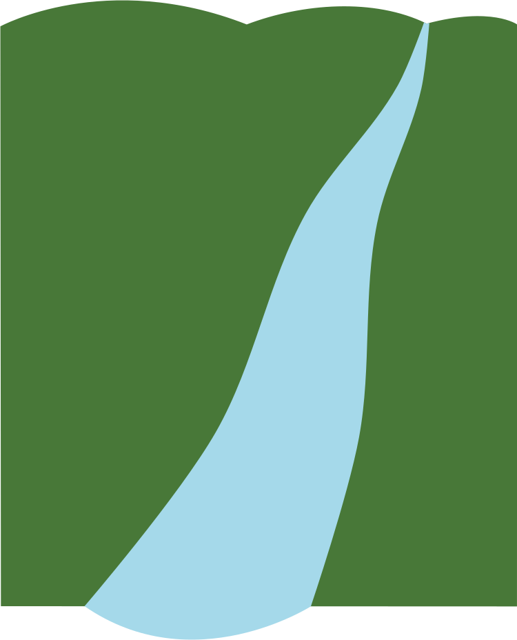

The Status Quo: Pay for Practice
Current conservation programs spend over $4 billion annually to reimburse farmers for implementing a limited set of conservation practices without tracking environmental outcomes.
Pay For Performance
This data-driven, performance-based approach tracks the environmental conservation practices and offers impacts of farmer-selected payments based on verified environmental improvements.
Who Pays Farmers?
- Wastewater treatment plants or other downstream entities that need to meet water quality obligations
- Conservation programs that want to show measureable water quality outcomes
Why Pay For Performance?
- Data-driven and science-based
- Measurable water quality improvements
- Cost-effective for farmers and conservation programs
- Provides flexibility and allows for farmer innovation
- Expands market opportunities for water quality trading
The Milwaukee River Pay for Performance project is a collaboration of Winrock International, Sand County Foundation, and Delta Institute with capital support provided by the Great Lakes Protection Fund.
Follow @WinrockIntl @SandCountyFdn @DeltaGreatLakes @GLPFund
And share your ideas using #PFPConservation